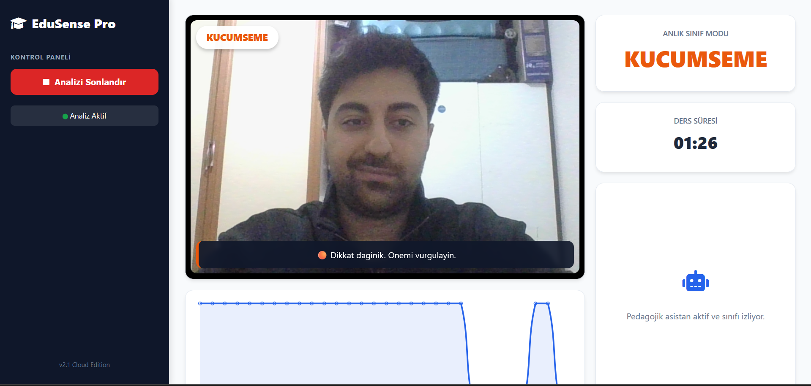
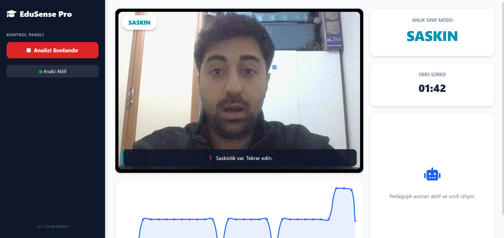
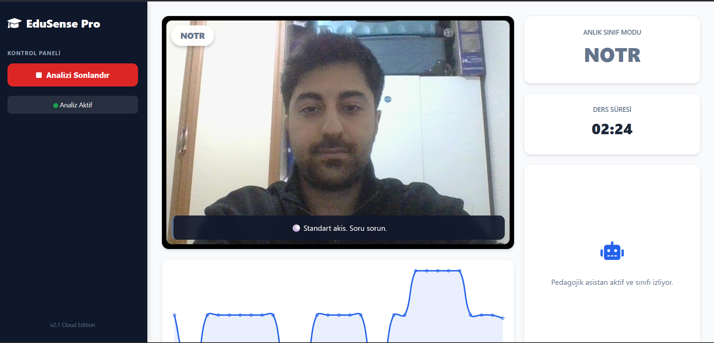
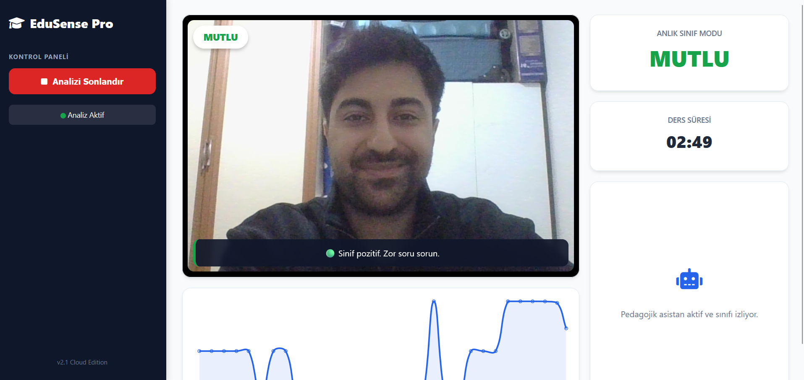
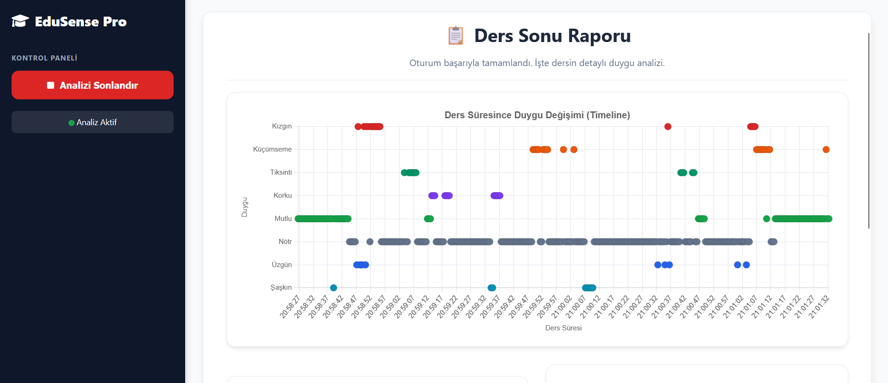
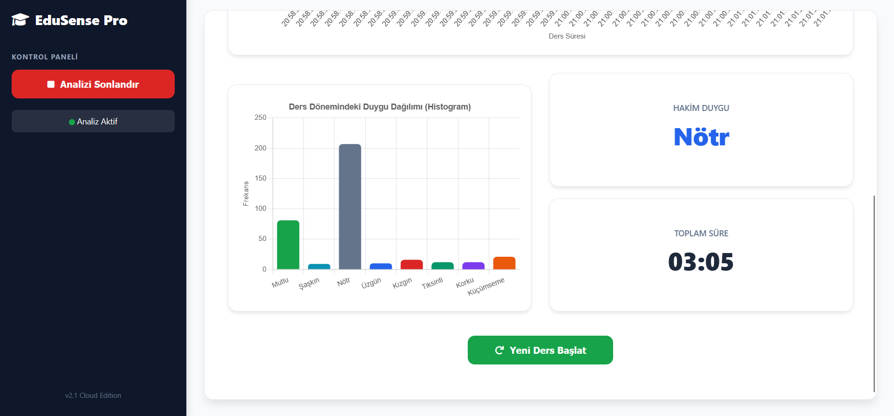

EduSense Pro: Gerçek Zamanlı Duygu Analizi
🚀 FastAPI
👁️ YOLOv8 (ONNX)
📊 Chart.js
🐍 Python
Proje Galerisi








Proje Özeti
Uzaktan eğitimde eğitmenlerin en büyük sorunu öğrenci ilgisini takip edememektir. EduSense, web kamerası üzerinden öğrencilerin 8 temel duygu durumunu analiz eder ve öğretmene anlık uyarılar (Örn: "Sınıfın dikkati dağıldı") gönderir.
Sistem Mimarisi
graph LR
A[Webcam] -->|Frame| B(JS Client)
B -->|POST| C{FastAPI}
C -->|CLAHE & LAB| D[Ön İşleme]
D -->|Inference| E[YOLO Model]
E -->|JSON| B
B -->|Render| F[Chart.js Dashboard]
# Görüntü İyileştirme Bloğu
lab = cv2.cvtColor(img, cv2.COLOR_BGR2LAB)
l, a, b = cv2.split(lab)
clahe = cv2.createCLAHE(clipLimit=3.0, tileGridSize=(8,8))
cl = clahe.apply(l)
limg = cv2.merge((cl,a,b))
img_processed = cv2.cvtColor(limg, cv2.COLOR_LAB2BGR)